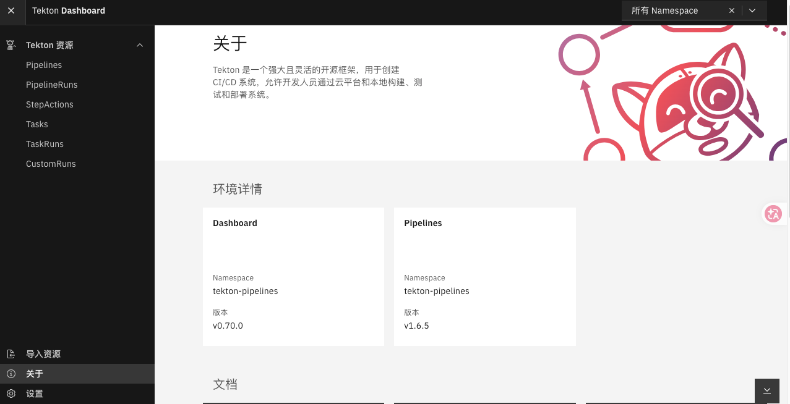

Tekton
Tekton
官网：
https://tekton.dev
简介
Tekton 是一套开源的用于构建CICD系统的云原生解决方案。其提供了灵活的易扩展的方式协助使用者构建CI/CD流水线。
Tekton 核心概念说明：
- Step：工作流的一个具体操作，每个Setp 都通过特定COntainer(Pod)运行
- Task: 由多个Step组成的序列，按照定义的顺序依次执行，运行在同一个Pod内切共享Pod环境变量和存储卷
- TaskRun: Task运行起来的具体实例，表现为执行Task的Pod
- Pipeline: 定义一个工作流程图，将多个Task串联起来完成一个工作流
- PipelineRun: Pipeline运行起来的具体实例，表示流水线的一次具体执行过程
部署
Teknton 系统核心组件介绍
- Tekton Pipelines: Tekton 的基础架构，定义一组Kubenretes CRD，作为CICD流水线的基本组件
- Tekton Dashboard: 基于 Web 的图形界面，用于管理 Tekton 管道
- Tekton Triggers: 根据事件来实例化流水线的执行
- Tekton CLI: 提供了一个基于 Kubernetes CLI 的命令行界面工具 tkn 与 Tekton 进行交互
Tekton Pipelines
官网： https://tekton.dev/docs/installation/pipelines/
wget -O pipeline-v1.6.5.yaml https://infra.tekton.dev/tekton-releases/pipeline/previous/v1.6.5/release.yaml
kubectl apply -f pipeline-v1.6.5.yaml
kubectl get pod -n tekton-pipelines
NAME READY STATUS RESTARTS AGE
tekton-events-controller-78d79dd956-bw548 1/1 Running 0 2m12s
tekton-pipelines-controller-74b7495766-hvrhm 1/1 Running 0 2m12s
tekton-pipelines-webhook-6b79b97b79-bdbt5 1/1 Running 0 2m11s
Tekton Dashboard
官网: https://tekton.dev/docs/dashboard/install/
wget -O dashboard-v0.70.0.yaml https://github.com/tektoncd/dashboard/releases/download/v0.70.0/release-full.yaml
kubectl apply -f dashboard-v0.70.0.yaml
kubectl get pod -n tekton-pipelines
NAME READY STATUS RESTARTS AGE
tekton-dashboard-756d8f748c-7v6d9 1/1 Running 0 57s
kubectl patch svc tekton-dashboard -n tekton-pipelines -p '{"spec":{"type":"NodePort","ports":[{"port":9097,"targetPort":9097,"nodePort":30097}]}}'
kubectl get svc -n tekton-pipelines
NAME TYPE CLUSTER-IP EXTERNAL-IP PORT(S) AGE
tekton-dashboard NodePort 10.108.171.21 <none> 9097:30097/TCP 5m34s
访问 Tekton Dashboard
通过http://<任意节点IP>:30097访问 Tekton Dashboard

Tekton Triggers
官网: https://tekton.cn/docs/triggers/install/
wget -O trigger-v0.36.0.yaml https://infra.tekton.dev/tekton-releases/triggers/previous/v0.36.0/release.yaml
kubectl apply -f trigger-v0.36.0.yaml
kubectl get pod -n tekton-pipelines
NAME READY STATUS RESTARTS AGE
tekton-triggers-controller-5bf9988d79-2ltkz 1/1 Running 0 2m17s
tekton-triggers-webhook-85fc67c54f-4mfmn 1/1 Running 0 2m17s
Tekton CLI
wget https://github.com/tektoncd/cli/releases/download/v0.44.2/tkn_0.44.2_Linux_x86_64.tar.gz
tar -xf tkn_0.44.2_Linux_x86_64.tar.gz
mv tkn /usr/local/bin/
tkn version
Client version: 0.44.2
Pipeline version: v1.6.5
Triggers version: v0.36.0
Dashboard version: v0.70.0
Tasks
实践前准备
- 创建Habor镜像凭据
cat > harbor-secret.yaml <<EOF
apiVersion: v1
kind: Secret
metadata:
name: harbor-secret
namespace: gitops
type: kubernetes.io/dockerconfigjson
data:
.dockerconfigjson: ewoJImF1dGhzIjogewoJCSJoYXJib3IuZGV2b3BzLmlvIjogewoJCQkiYXV0aCI6ICJZV1J0YVc0NlNHRnlZbTl5TVRJek5EVT0iCgkJfQoJfQp9
EOF
kubectl apply -f harbor-secret.yaml
- 创建GitLab访问凭据
cat > gitlab-secret.yaml <<EOF
apiVersion: v1
kind: Secret
metadata:
name: gitlab-basic-auth
namespace: gitops
annotations:
tekton.dev/git-0: http://gitlab.devops.io
type: kubernetes.io/basic-auth
stringData:
username: "root"
password: "dy6545286"
EOF
kubectl apply -f gitlab-secret.yaml
- 关联ServiceAccount
Checkout
从 Git 仓库克隆源代码
cat > checkout.yaml << 'EOF'
apiVersion: tekton.dev/v1beta1
kind: Task
metadata:
name: checkout
namespace: gitops
spec:
params:
- name: repoUrl
type: string
description: "Git 仓库地址"
- name: repoBranch
type: string
default: "main"
description: "Git 分支"
workspaces:
- name: source
mountPath: /workspace
steps:
- name: git-clone
image: harbor.devops.io/devops/git:v2.54.0
workingDir: /workspace
script: |
#!/bin/sh
set -e
echo "仓库地址: $(params.repoUrl)"
echo "分支: $(params.repoBranch)"
repoName=$(basename "$(params.repoUrl)" .git)
# 清理已存在的目录
if [ -d "${repoName}" ]; then
rm -rf "${repoName}"
fi
# 克隆代码
git clone -b "$(params.repoBranch)" "$(params.repoUrl)"
# 查看克隆结果
ls -la "${repoName}"
EOF
kubectl apply -f checkout.yaml
cat > checkout-run.yaml << 'EOF'
apiVersion: tekton.dev/v1beta1
kind: TaskRun
metadata:
name: checkout-run
namespace: gitops
spec:
serviceAccountName: tekton-ci-sa
taskRef:
name: checkout
params:
- name: repoUrl
value: "http://gitlab.devops.io/devops/helloworld.git"
- name: repoBranch
value: "main"
workspaces:
- name: source
persistentVolumeClaim:
claimName: shared-workspace-pvc
# volumeClaimTemplate:
# spec:
# accessModes:
# - ReadWriteOnce
# resources:
# requests:
# storage: 100Mi
# storageClassName: nfs-client
podTemplate:
hostAliases:
- ip: "172.16.143.251"
hostnames:
- "gitlab.devops.io"
- ip: "172.16.143.250"
hostnames:
- "harbor.devops.io"
EOF
kubectl apply -f checkout-run.yaml
Build
编译构建 Java/Maven 项目
cat > build.yaml << 'EOF'
apiVersion: tekton.dev/v1
kind: Task
metadata:
name: build
namespace: gitops
spec:
params:
- name: buildCmd
type: string
description: "Maven 构建命令"
default: "mvn clean package -DskipTests"
- name: repoName
type: string
description: "代码仓库名称"
workspaces:
- name: source
mountPath: /workspace
steps:
- name: build-package
image: harbor.devops.io/devops/maven:3.9.16-eclipse-temurin-17-noble
workingDir: /workspace
env:
- name: MAVEN_OPTS
value: "-Dmaven.repo.local=/root/.m2/repository"
volumeMounts:
- name: m2-cache
mountPath: /root/.m2
script: |
#!/bin/sh
set -e
echo "开始构建..."
cd "$(params.repoName)"
$(params.buildCmd)
echo "构建完成！"
volumes:
- name: m2-cache
persistentVolumeClaim:
claimName: maven-cache-pvc
EOF
kubectl apply -f build.yaml
cat > build-run.yaml << 'EOF'
apiVersion: tekton.dev/v1beta1
kind: TaskRun
metadata:
name: build-run
namespace: gitops
spec:
serviceAccountName: tekton-ci-sa
taskRef:
name: build
params:
- name: buildCmd
value: "mvn clean package -DskipTests -U -s settings.xml"
- name: repoName
value: "helloworld"
workspaces:
- name: source
persistentVolumeClaim:
claimName: shared-workspace-pvc
EOF
kubectl apply -f build-run.yaml
Image
使用 Buildah 构建容器镜像并推送到 Harbor
cat > image.yaml << 'EOF'
apiVersion: tekton.dev/v1
kind: Task
metadata:
name: image
namespace: gitops
spec:
params:
- name: harborUrl
type: string
description: "Harbor 仓库地址"
- name: imagePath
type: string
description: "镜像路径 (项目/仓库名)"
- name: repoName
type: string
description: "代码仓库名称"
workspaces:
- name: source
mountPath: /workspace
results:
- name: imageFullName
description: "完整的镜像名称"
steps:
- name: buildah-image
image: harbor.devops.io/devops/buildah:stable
workingDir: /workspace
securityContext:
privileged: true
capabilities:
add:
- SYS_ADMIN
env:
- name: TZ
value: "Asia/Shanghai"
- name: BUILD_REGISTRY_SOURCES
value: '{"insecureRegistries": ["harbor.devops.io"]}'
script: |
#!/bin/sh
set -e
# 生成镜像标签
datetime="$(date '+%Y%m%d%H%M%S')"
imageTag="v${datetime}"
imageFullName="$(params.harborUrl)/$(params.imagePath):${imageTag}"
# 输出镜像名称供后续 Task 使用
echo -n "${imageFullName}" | tee "$(results.imageFullName.path)"
# 进入代码目录
cd "$(params.repoName)"
# 登录 Harbor
export BUILDAH_REGISTRY_TLS_VERIFY=0
echo "Harbor12345" | buildah login \
--tls-verify=false \
-u admin \
--password-stdin harbor.devops.io
# 构建镜像
echo "构建镜像: ${imageFullName}"
buildah --tls-verify=false bud -t "${imageFullName}" .
# 推送镜像
echo "推送镜像: ${imageFullName}"
buildah push --tls-verify=false "${imageFullName}"
echo "✅ 镜像推送成功: ${imageFullName}"
EOF
kubectl apply -f image.yaml
cat > image-run.yaml << 'EOF'
apiVersion: tekton.dev/v1
kind: TaskRun
metadata:
name: image-run
namespace: gitops
spec:
serviceAccountName: tekton-ci-sa
taskRef:
name: image
params:
- name: harborUrl
value: "harbor.devops.io"
- name: imagePath
value: "newproj/helloworld"
- name: repoName
value: "helloworld"
workspaces:
- name: source
persistentVolumeClaim:
claimName: shared-workspace-pvc
podTemplate:
hostAliases:
- ip: "172.16.143.250"
hostnames:
- "harbor.devops.io"
EOF
kubectl apply -f image-run.yaml
Deploy
更新 Kubernetes 资源并部署应用到指定的namespace
cat > tekton-cd-sa.yaml << 'EOF'
apiVersion: rbac.authorization.k8s.io/v1
kind: ClusterRoleBinding
metadata:
name: tekton-cd-sa
roleRef:
apiGroup: rbac.authorization.k8s.io
kind: ClusterRole
name: cluster-admin
subjects:
- kind: ServiceAccount
name: tekton-cd-sa
namespace: gitops
---
apiVersion: v1
kind: ServiceAccount
metadata:
name: tekton-cd-sa
namespace: gitops
imagePullSecrets:
- name: harbor-secret
EOF
kubectl apply -f tekton-cd-sa.yaml
cat > deploy.yaml << 'EOF'
apiVersion: tekton.dev/v1
kind: Task
metadata:
name: deploy
namespace: gitops
spec:
params:
- name: imageFullName
type: string
description: "完整的镜像名称"
- name: repoName
type: string
description: "代码仓库名称"
- name: namespace
type: string
default: "test"
description: "部署的 Kubernetes 命名空间"
workspaces:
- name: source
mountPath: /workspace
steps:
- name: update-manifests
image: harbor.devops.io/devops/alpine:latest
workingDir: /workspace
script: |
#!/bin/sh
set -e
cd "$(params.repoName)"
echo "更新 Deployment 镜像..."
sed -i -e \
"s@__IMAGE__@$(params.imageFullName)@g" \
manifests/deployment.yaml
echo "更新后的 Deployment:"
cat manifests/deployment.yaml
- name: deploy-to-cluster
image: harbor.devops.io/devops/kubectl:v1.25
workingDir: /workspace
script: |
#!/bin/sh
set -e
cd "$(params.repoName)"
echo "部署应用到命名空间: $(params.namespace)"
kubectl apply -f manifests/deployment.yaml -n "$(params.namespace)"
echo "等待 Pod 就绪..."
kubectl rollout status deployment/helloworld \
-n "$(params.namespace)" \
--timeout=120s
echo "✅ 部署成功！"
EOF
kubectl apply -f deploy.yaml
cat > deploy-run.yaml << 'EOF'
apiVersion: tekton.dev/v1
kind: TaskRun
metadata:
name: deploy-run
namespace: gitops
spec:
serviceAccountName: tekton-cd-sa
taskRef:
name: deploy
retries: 3
params:
- name: imageFullName
value: "harbor.devops.io/newproj/helloworld:v20260724094034"
- name: repoName
value: "helloworld"
- name: namespace
value: "test"
workspaces:
- name: source
persistentVolumeClaim:
claimName: checkout-pvc
podTemplate:
hostAliases:
- ip: "172.16.143.250"
hostnames:
- "harbor.devops.io"
EOF
kubectl apply -f deploy-run.yaml
Pipeline
使用流水线完整串联整个流程
cat > ci-cd-pipeline.yaml << 'EOF'
# pipelines/ci-cd-pipeline.yaml
---
apiVersion: tekton.dev/v1
kind: Pipeline
metadata:
name: ci-cd-pipeline
namespace: gitops
labels:
app: helloworld
spec:
params:
# Git 参数
- name: repoUrl
type: string
description: "Git 仓库地址"
- name: repoBranch
type: string
default: "main"
description: "Git 分支"
- name: repoName
type: string
description: "代码仓库名称"
# Harbor 参数
- name: harborUrl
type: string
default: "harbor.devops.io"
- name: harborProject
type: string
default: "newproj"
# 构建参数
- name: buildCmd
type: string
default: "mvn clean package -DskipTests -U"
# 部署参数
- name: deployNamespace
type: string
default: "test"
workspaces:
- name: workspace
description: "共享工作空间"
- name: maven-cache
description: "Maven 缓存"
optional: true
tasks:
# 1. 拉取代码
- name: checkout
taskRef:
name: checkout
params:
- name: repoUrl
value: "$(params.repoUrl)"
- name: repoBranch
value: "$(params.repoBranch)"
workspaces:
- name: source
workspace: workspace
# 2. 构建编译
- name: build
taskRef:
name: build
runAfter:
- checkout
params:
- name: buildCmd
value: "$(params.buildCmd)"
- name: repoName
value: "$(params.repoName)"
workspaces:
- name: source
workspace: workspace
- name: m2-cache
workspace: maven-cache
# 3. 构建镜像
- name: build-image
taskRef:
name: image
runAfter:
- build
params:
- name: harborUrl
value: "$(params.harborUrl)"
- name: imagePath
value: "$(params.harborProject)/$(params.repoName)"
- name: repoName
value: "$(params.repoName)"
workspaces:
- name: source
workspace: workspace
# 4. 部署应用
- name: deploy
taskRef:
name: deploy
runAfter:
- build-image
params:
- name: imageFullName
value: "$(tasks.build-image.results.imageFullName)"
- name: repoName
value: "$(params.repoName)"
- name: namespace
value: "$(params.deployNamespace)"
workspaces:
- name: source
workspace: workspace
EOF
kubectl apply -f ci-cd-pipeline.yaml